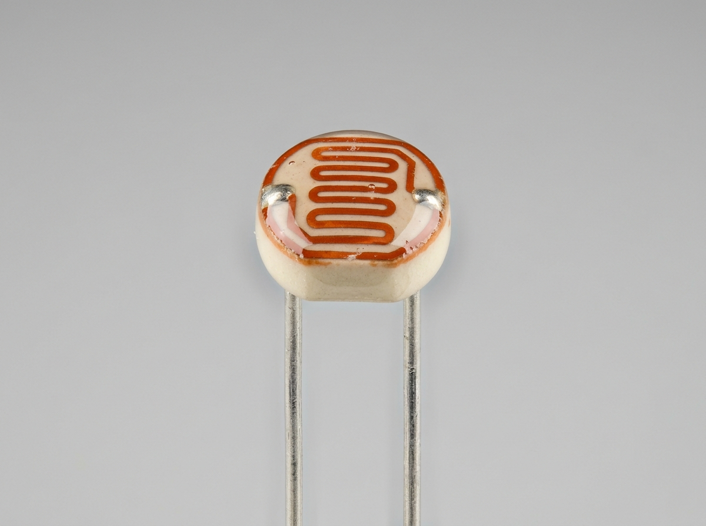

Sensing Modalities
The single most consequential engineering choice in the project. This page documents the physical physics separating motion sensors from true presence sensors.
HLK-LD2410 24 GHz mmWave FMCW radar. It can detect moving and micro-moving human targets, making it more suitable than PIR for a person seated reading or resting. Detection still depends on placement, target posture, sensitivity, and environmental reflections; it is not a guarantee of continuous occupancy detection.
Evaluating Five Competing Modalities
| Modality Tested | Sensor Type | Decisive Failure Reason | Verdict |
|---|---|---|---|
| PIR (Passive Infrared) | AM312 / Panasonic EKMC | Motion only. May stop reporting after a person sits still, so it cannot reliably maintain light while reading. | Disqualified |
| Cheap 24 GHz Doppler | RCWL-0516 | Gross motion only, single uncalibrated threshold, no distance telemetry. Locks ON continuously near ceiling fans. | Disqualified |
| ToF Laser Ranging | VL53L1X | Measures distance along a 27° narrow cone. Blind to dark clothing; narrow field of view fails for room coverage. | Inadequate |
| Camera + AI Pose Model | ESP32-S3 Eye / Pi Camera | Intrusive privacy concern in bedrooms/living rooms; draws 300–800 mA; fails when occupant is covered by a blanket. | Rejected |
| mmWave FMCW Radar | HLK-LD2410 | Distinguishes moving walking targets from stationary breathing micro-motion. Distance gates reject ceiling fans. | Selected (Optimal) |
Motion vs. True Presence Detection
The distinction between motion sensing and presence sensing is the entire reason radar justifies its modest cost premium over PIR:
How mmWave FMCW Radar Detects Stillness
- FMCW processing: The 24 GHz module uses frequency-modulated continuous-wave radar processing and reports configured distance-gate energy plus moving/static target states. Consult the current Hi-Link manual for implementation-level waveform details.
- Beat Frequency Mixing: The reflected echo from the human body mixes with the outgoing chirp. The intermediate beat frequency is linearly proportional to the target's distance.
- Distance gating: The LD2410 reports configurable distance gates and target energy over its rated range. Gate numbering and resolution vary by firmware/manual revision, so configure and verify the actual module rather than assuming “Gate 8” is always valid.
- Micro-Motion Thresholding: The sensor firmware applies a specialized static energy threshold tuned to 1–3 mm thoracic excursions caused by human breathing.
Photographic Sensor Inspection
 mmWave Core
mmWave Core
HLK-LD2410 Patch Array
Gold-plated planar microstrip antenna array providing ±60° azimuth and ±40° elevation beam coverage. Compact 35x7 mm footprint with 5-pin UART interface.

Optical DividerGL5528 Optical LDR
Cadmium sulfide (CdS) photo-conductive track under clear epoxy encapsulation. Forms a simple analog voltage divider with a 10 kΩ resistor on the ESP32-C6 ADC.